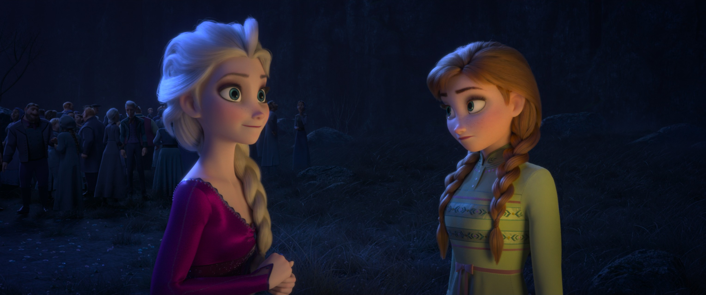

🌲 Forest of Shadows · 加冕之后

📖 小说概述
发生在《冰雪奇缘 2》之前的官方正典中篇前传，讲述安娜与艾莎在阿伦黛尔执政期间遭遇的一场神秘危机。填补了两部电影之间的空档，写“加冕之后的艾莎”如何学习做一个会魔法的女王。
❄️ 艾莎在这本小说中的完整经历
执政的女王
成年后的姐妹原本平静地料理国事，艾莎作为女王学着用魔法治国，却仍偶被“我会伤人吗”的念头侵扰。F1 之后，release 之后，生活仍要一天天过——艾莎在“会魔法的女王”这个新身份中摸索，既要治国，又要与自己的力量共处。
森林的阴影
然而一种无声的“枯萎”开始侵蚀阿伦黛尔——庄稼与牲口接连染上怪病、凋零衰败，城堡内外也频频出现难以解释的异象：一具造型诡异的金属头盔、潜入大厅的黄眼白狼，以及克里斯托夫的驯鹿斯文突然病倒。安娜与艾莎在一封夹着细小附言的信件中察觉，这些征兆并非孤立事件，而是与母亲伊杜娜睡前故事里反复提及的“暗影森林”（魔法森林）及北境民族息息相关。随着调查的深入，象征黑暗的沙粒从门缝渗入塔屋，带来黏腻而可怖的念头，暗示某种“暗影”正从被迷雾封锁的魔法森林向外蔓延。艾莎怀疑是自己魔法的“阴影”，再度想逃。
与安娜并肩
安娜、艾莎与克里斯托夫·斯文循迹深入，先后进入水晶般澄澈的洞穴与幽深的矿井隧道，途中遇见能以其歌声牵动森林魔法的北乌兰德拉女孩胡尔德，并从北乌兰德拉讲述者口述的墙纹传说中，辨明了传说中“回旋之刃”的所在。姐妹一度因误判而受挫，却也在挫折中更加同心。安娜没有让她独自扛，姐妹一同面对，艾莎第一次体会“不必一个人承担”。
暗影的源头与呼唤的铺垫
最终，安娜在梦中听见母亲伊杜娜哼唱的摇篮曲，那旋律将她引向关于“阿伦取回雷伏卢特”的太阳穹顶宫殿古老传说，并指向被遗忘的过往。姐妹俩携手揭开暗影的源头，化解了阿伦黛尔与魔法森林之间濒临断裂的联结。尾声里，安娜梦见黑暗中一粒飘荡的火星——这缕微光与未散的呼唤，正为《冰雪奇缘 2》中艾莎所听见的“声音”与身世之谜悄然铺路。
🏷️ 作品定位
本书为《冰雪奇缘》系列的官方正典中篇前传小说，时间线严格置于《冰雪奇缘 2》（2019）之前，是连接第一部电影结局与第二部电影开场之间的叙事桥梁。它在正典体系中补足了姐妹二人执政早期的经历，并以“暗影森林”“北乌兰德拉”“母亲的过去”等线索，为《冰雪奇缘 2》的核心谜题作出前置铺垫。
🔗 与电影/其他作品的关联
- 《冰雪奇缘 2》（2019）：本书为其直接前传，预先呈现“暗影/迷雾蔓延”“母亲的摇篮曲”“北乌兰德拉与魔法森林”等元素，使电影中艾莎前往寻访身世与呼唤之音的动机更具铺垫。
- 《冰雪奇缘》（2013）：承接第一部结尾后安娜与艾莎重建的手足关系，展现二人作为女王与公主协作治国的日常。
- 北乌兰德拉与胡尔德民传说：将电影中的北乌兰德拉族群与阿伦黛尔民间故事里的“隐遁之民”传说相勾连，丰富了魔法森林的文化背景。
- 伊杜娜王后：通过摇篮曲与童年记忆，强化了母亲在姐妹二人成长与命运中的隐性牵引，与电影 2 对母亲过往的揭示形成呼应。
✨ 这本小说补充了什么电影里没有的艾莎信息
- F1 后艾莎日常执政的描写
- 她对魔法“是否安全”的持续自我怀疑
- 安娜如何在姐姐低谷时托住她
- 魔法森林在两次电影间的状态
- 引入“胡尔德民”“回旋之刃（vindur）”“雷伏卢特”等原创传说元素，拓展了阿伦黛尔与魔法森林的神话谱系
💡 这本小说如何改变/深化了我们对艾莎的理解
Forest of Shadows 是艾莎“加冕之后、觉醒之前”的过渡带——它证明：release 之后，生活仍要一天天过，而有人陪着，恐惧就没那么可怕。它以小说媒介填补了正片未及展现的时间段，使《冰雪奇缘 2》的悬念获得前置叙事支撑。
⭐ 亮点与特色
- 正典前传补完：以小说媒介填补了正片未及展现的时间段，使《冰雪奇缘 2》的悬念获得前置叙事支撑。
- 民间传说体系化：引入“胡尔德民”“回旋之刃”“雷伏卢特”等原创传说元素，拓展了阿伦黛尔与魔法森林的神话谱系。
- 双线叙事：以童年白狼记忆与成年危机双线交织，揭示暗影主题跨越时光的呼应。
- 姐妹协作视角：延续并深化安娜与艾莎的手足羁绊，将“携手化解危机”作为贯穿始终的情感内核。

